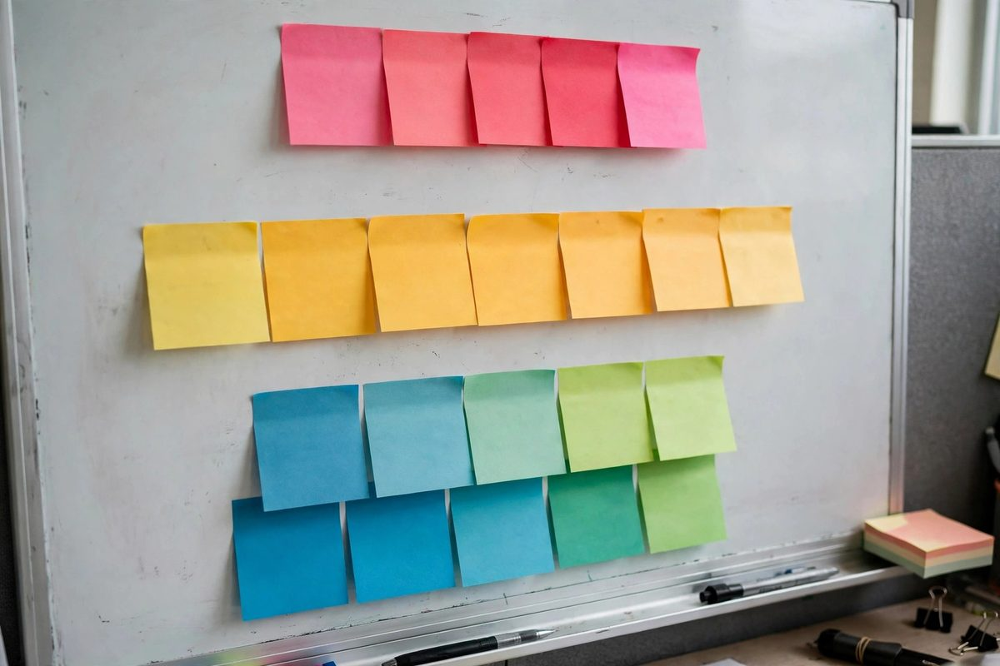
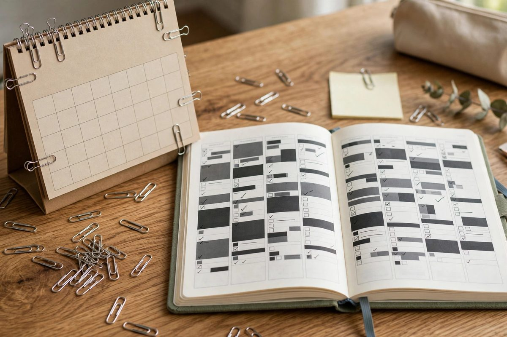
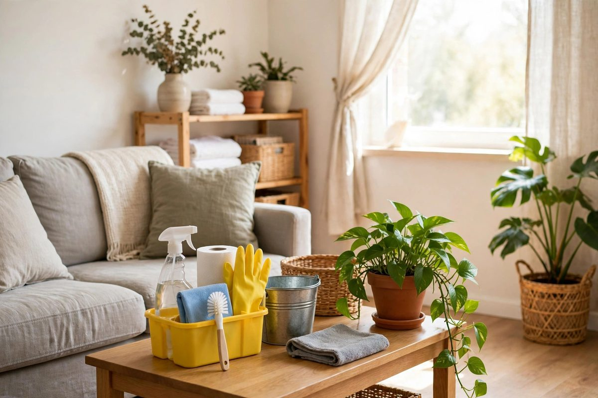
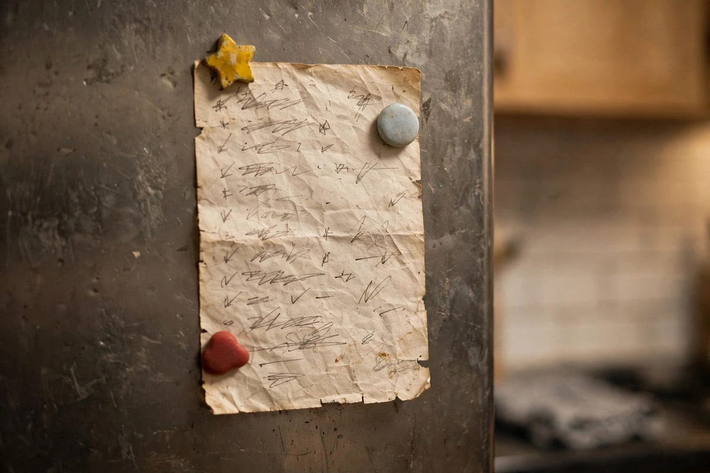
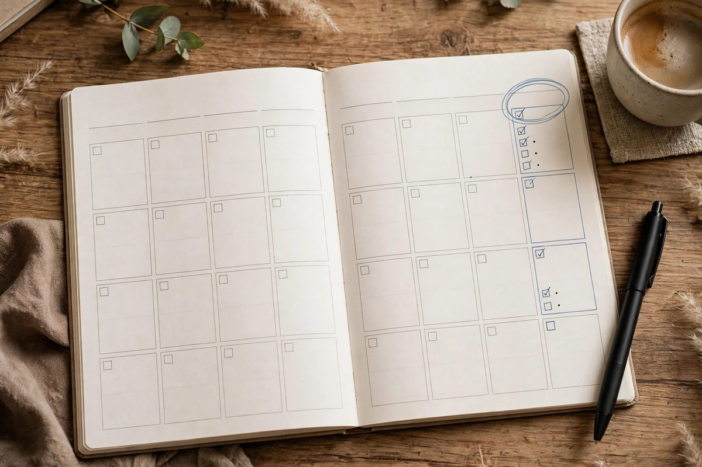
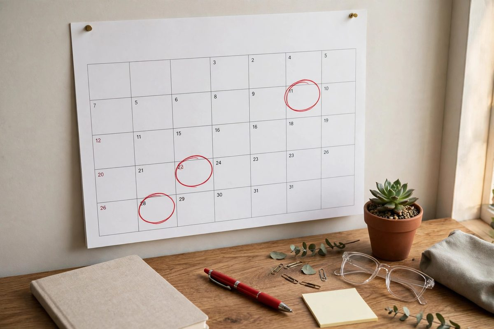

To-Do List
A simple, fast to-do list. Add tasks, set priorities and due dates, and clear them one by one.
How it works
To-Do List is a free, simple tool that works entirely in your browser. Start with our guide on how to make a to-do list priority tasks explained how to sort tasks by due date to-do list for beginners how to prioritise your day to-do list for work, then open the main tool and try it yourself. Everything is explained in plain language, with worked examples and practical steps you can follow today.
Each tool on this site is free and needs no account. Your data, where a tool stores any, stays on your own device. Read the guides below to learn how to get the most from each tool, avoid common mistakes, and build a routine that lasts.
Our tools
To-Do List
Add tasks with a priority and a due date, tick them off when done and keep your day organised.
Guides
How to Make a To-Do List
A good to-do list is short, specific and written down before the day starts, not remembered during it.

Priority Tasks Explained
Not every task matters equally. Priority is how you decide what to do first when everything feels urgent.

How to Sort Tasks by Due Date
Sorting by due date turns a mixed list into an order: what is overdue, what is due today, and what can wait.
To-Do List for Beginners
If you have never used a to-do list, start with three tasks, finish them, and build from there.
How to Prioritise Your Day
Prioritising a day means choosing the one or two tasks that would make the day a success if nothing else got done.
To-Do List for Work
A work to-do list keeps tasks, deadlines and meetings in one place so nothing is carried only in your head.
To-Do List for Study
A study to-do list breaks revision and assignments into small tasks that can be finished in one sitting.
Completed Tasks Archive Explained
A completed archive is the record of what you finished, and it is more useful than most people expect.
How to Break Big Tasks Down
Big tasks feel hard to start because the first step is unclear. Breaking them down fixes exactly that.
Daily To-Do List Routine
A daily routine is a short habit around your list: plan in the morning, check at midday, review at night.

To-Do List for Home Tasks
Home tasks are the chores, repairs and errands that are easy to forget and annoying when they pile up.
How to Avoid Overloading Your List
A list with twenty tasks is not a plan, it is a wish. A useful list is one you can actually finish.

To-Do List Mistakes to Avoid
To-do lists fail for predictable reasons, and most of them are about how tasks are written, not about effort.

Weekly Planning With a To-Do List
Weekly planning is a short session where you choose the tasks for the week before the week chooses them for you.

How to Use Due Dates Effectively
A due date helps only when it is real. A fake due date on every task makes all of them easy to ignore.
To-Do List for Morning Routines
A morning routine list turns the first hour of the day into a set of small, finished tasks.
How to Review Completed Tasks
Reviewing finished tasks shows what you actually did, which is often different from what you planned to do.
To-Do List for Goals
Goals become tasks when you break them into steps with dates, and a to-do list is where those steps live.
Simple To-Do List vs Complex Apps
A simple list beats a complex app when the app takes longer to manage than the tasks take to do.
How to Stay Consistent With a To-Do List
A to-do list works when using it becomes a daily habit, not a project you start again every Monday.
Frequently asked questions
Is my to-do list private?
Yes. Tasks are stored only in your own browser using localStorage. There is no account, no server and nothing is sent anywhere.
Will my tasks stay after I close the browser?
Yes, localStorage keeps them on your device until you clear your browser data or clear them in a tool.
Can I set a due date for a task?
Yes. Add an optional due date when you create a task, then sort by due date on the due-date page.
What happens to a finished task?
It moves to the completed archive, where you can review it, restore it or clear the archive.
Can I use it on my phone?
Yes. The list is responsive with large touch-friendly buttons for phones and tablets.
How many tasks can I add?
There is no fixed limit in the tool. Keep the list short enough to finish in a day for the best results.